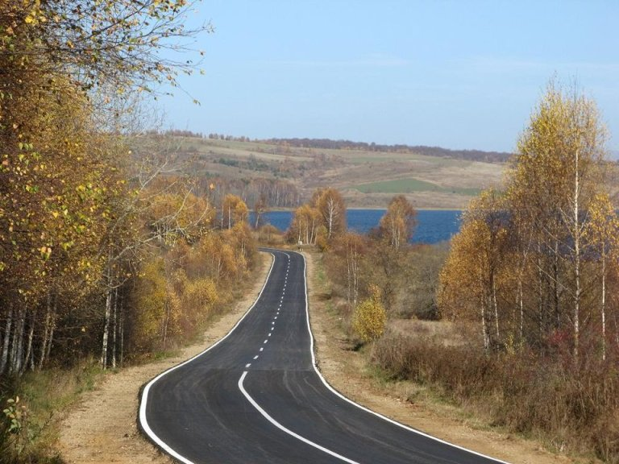
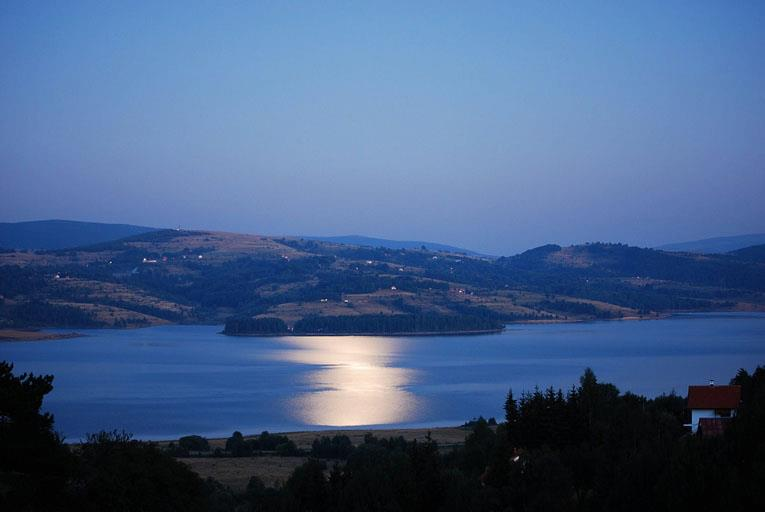
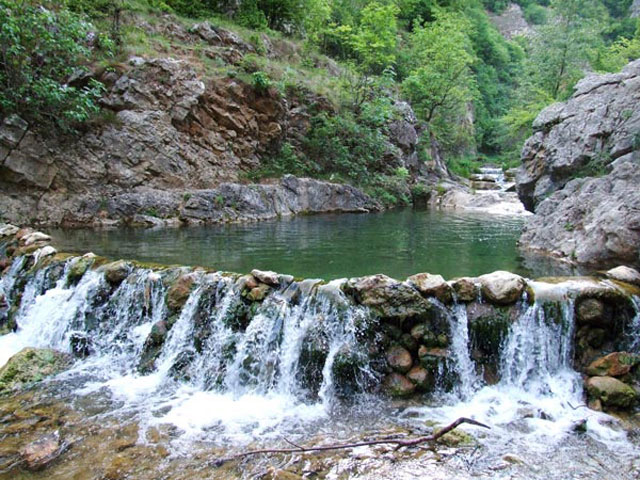

VLASINSKO JEZERO
.
Vlasinsko jezero je akumulaciono jezero na jugoistoku Srbije sa površinom od 15 km² i dubinom do 35m. Jezero se nalazi na području opštine Surdulica. Jezero se nalazi na 1.204 m (srednji nivo) nadmorske visine. Na obalama jezera smeštena su tri sela: Vlasina Okruglica, Vlasina Rid i Vlasina Stojkovićeva. Vlasinsko jezero je obrazovano u razdoblju 1949—1954. godine.

text & images : Izvor: foto Miljan Nuče Savić
Kad sa puta od Vladičinog Hana krenete ka Bugarskoj, među nežnim brezama koje se povijaju na vetru ukazaće se jarko plavetnilo čija lepota oduzima dah – blagi talasi Vlasinskog jezera svetlucaju na suncu i ogledaju se u nebu.

text & images izvor: Fejsbuk, Čarolije Republike Srbije
Ova očaravajuća lepota, koju je svojim radom uspeo da stvori čovek, smestila se na jugoistok Srbije, uz talasavu Vlasinsku visoravan, zarivenu među vrhovima:
- Čemernika
- Vardenika
- Gramade
- Krajišta.

text & images izvor: Fejsbuk, Čarolije Republike Srbije
Ali ona nije oduvek ovde. Verovali ili ne, ovo veštačko jezero veličanstvenih boja nije tu ni ceo vek. A još teže je zamisliti i beskrajne livade i močvare prožete živim blatom, ševarima, trskom i mahovinom koja pluta po izvorištu Vlasine.